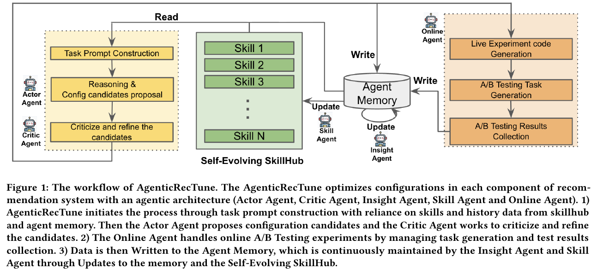
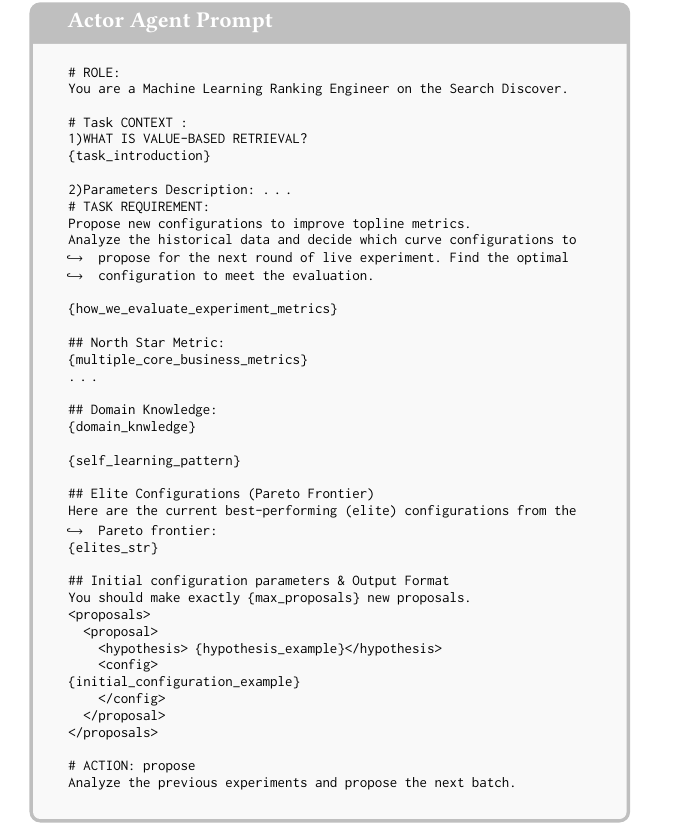
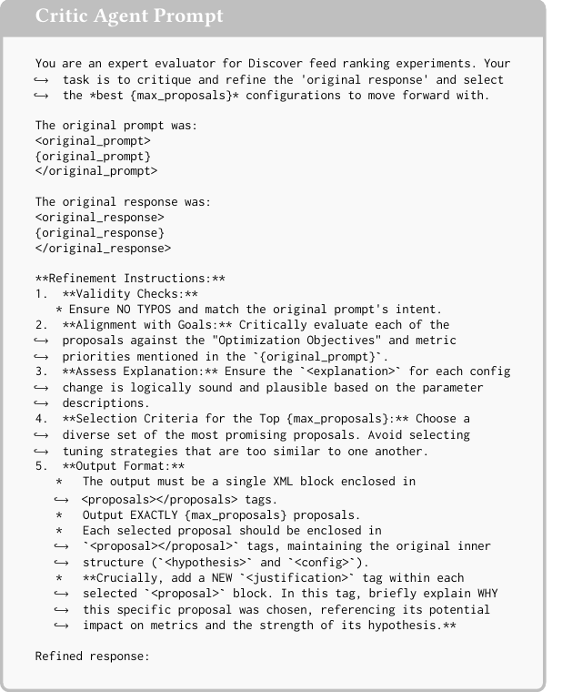
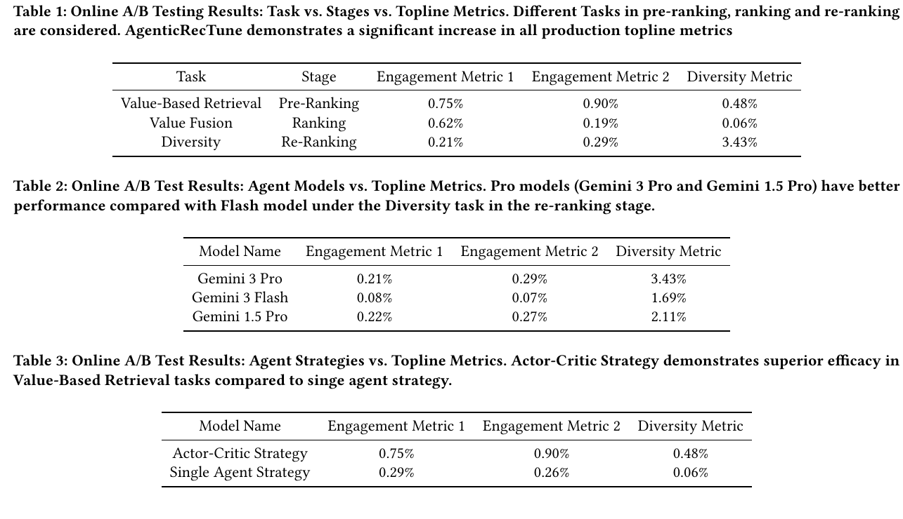

AgenticRecTune
1. 基本信息
- 标题：AgenticRecTune: Multi-Agent with Self-Evolving Skillhub for Recommendation System Optimization
- 作者：Xidong Wu, Yue Zhuan, Ruoqiao Wei, Hangxin Chen, Di Bai, Jintao Liu, Xinyi Wang, Xue Wang, Luoshu Wang, Xinwu Cheng
- 机构：Google
- 时间：2026（本地 PDF 页眉为
Conference acronym 'XX, Sep., 2026, MN；笔记保留 arXiv v2 日期 2026-05-12 作为版本时间） - arXiv：https://arxiv.org/abs/2604.26969
- 关键词：Recommendation System、Large Language Model、Agentic System、System-level Configuration、Online A/B Testing
- 本地 PDF：
C:\Users\chaol\Desktop\推荐论文阅读\rec-agent\AgenticRecTune.pdf - 笔记位置：
论文笔记/重排/系统配置优化/AgenticRecTune.md - 分类：重排 / 系统配置优化
- PDF 版本备注：PDF 的 ACM reference 区仍有
2018和Conference acronym 'XX等模板占位，年份以 arXiv 编号和 PDF 页眉的 2026 为准。
2. 相关论文与笔记
- 推荐系统重排最新进展：综述把本文作为“重排优化从模型结构扩展到系统配置与线上实验闭环”的入口，适合理解重排层外部参数如何被自动调优。
- 已检查当前重排目录中的 CMR、LLM4Rerank、LLM-Enhanced reranking 等笔记。它们与本文同属重排或 LLM 辅助重排主题，但没有直接基线、前置/后续或明确互评关系；因此不建立额外论文级双向链接。
3. 一句话总结
AgenticRecTune 不是去改推荐模型结构，而是把工业推荐系统里原本靠专家手工调的系统级配置，例如 pre-ranking、ranking、re-ranking 阶段的融合权重、阈值和业务约束参数，交给一个带记忆、可更新 Skillhub、能发起线上 A/B 实验的多 agent 闭环来持续优化。
4. 论文在解决什么问题
4.1 推荐系统优化不只是在训练模型
现代工业推荐通常是多阶段流水线：先 retrieval 召回大候选集，再用 pre-ranking 快速筛到千级候选，然后 ranking 用更重的模型精排，最后 re-ranking 做多样性、业务规则、疲劳控制等列表级调整。
传统推荐论文常把问题收缩成某个模型内部的任务，例如改 ranking backbone、改多任务训练目标、改某个召回模型。但真实线上系统还有一层很重要的“胶水”：多个模型头的输出怎么融合，不同业务指标怎么平衡，某些阈值和惩罚项该怎么调。论文把这些称为 system-level configurations。
这些配置有三个难点：
- 可扩展性差：每次模型结构、特征或业务目标变化，旧配置都可能失效，需要重新全局调参。
- 上下文碎片化：pre-ranking、ranking、re-ranking 面对的候选规模、延迟约束、局部目标都不同，调参依赖大量阶段特定经验。
- 线上目标多且变化：离线训练 label 往往只覆盖点击、停留等局部 proxy，线上却要同时看 engagement、diversity、retention、产品策略目标，且这些目标会随周期变化。
所以本文的核心判断是：这里的问题不是“再造一个更强模型”就能解决，而是要把配置优化从人工经验流程变成一个能理解任务上下文、能做线上实验、能把历史结果沉淀为可复用技能的闭环系统。
4.2 为什么 AutoML / HPO 不够
论文把 AgenticRecTune 和 AutoML、HPO 区分得比较清楚。标准 HPO 擅长在预定义数值空间里找超参，但它默认优化目标明确、反馈相对直接，例如 loss 或 accuracy。工业推荐的系统级配置不是这样：
- 排序、截断、Top-K、业务规则等操作不可微，不能直接反传优化。
- 线上反馈延迟且 noisy，很多指标必须通过 A/B 测试评估。
- 参数不是孤立数值，常常带有业务语义，例如“提高某个多样性 penalty 可能保护生态，但过强会伤害短期 engagement”。
- 每个实验都要满足上线平台、流量分桶、时间窗口、显著性检验和人工 review 等约束。
我的理解是，AgenticRecTune 的价值不在于“LLM 比贝叶斯优化更会猜参数”，而在于它把自然语言任务说明、历史实验记录、工程约束和线上操作串成一个可执行流程。
5. 相关工作位置
论文把相关工作分成三类：
- LLM as recommender / simulator / interactive agent：如 P5、RecPrompt、STARec、MemRec、InteRecAgent、RecMind，重点是用 LLM 表达偏好、对话或规划。
- Autonomous ML engineering / HPO：如 AI Scientist、PACEvolve、AgentHPO、ML-Agent、OptimAI、Eureka、ACE，重点是自动做实验、代码修改或上下文工程。
- 面向推荐的系统级 agent 优化：如 AgenticTagger、Self-EvolveRec、DualAgent-Rec 等，开始进入推荐系统自动优化，但多数仍偏 feature engineering、模型结构突变或单阶段目标。
AgenticRecTune 的定位是：不编辑模型代码，不只跑离线指标，而是作为 live system controller 去调推荐系统中的非可微配置，并直接用生产 A/B 指标闭环。
6. 多层组合优化形式化
6.1 系统配置空间
论文先把多阶段推荐写成一个 compositional optimization 问题。三类配置分别是：
- ：pre-ranking 阶段配置。
- ：ranking 阶段配置。
- ：re-ranking 阶段配置。
整体配置向量是：
这里要注意 和 的区别。 是各阶段模型权重，通常不是本文 agent 直接改的对象； 是系统级配置，例如融合权重、阈值、规则参数。也就是说，AgenticRecTune 优化的是模型外层的在线系统参数，而不是梯度训练里的模型参数。
6.2 多阶段输出
每个阶段可以看成一个带模型权重和系统配置的函数：
- Pre-Ranking：
- Ranking：
- Re-Ranking：
最终展示给用户的 ranked list 被写成组合函数：
这个公式里容易忽略的条件是：每一阶段的输出必须能作为下一阶段的输入。例如 pre-ranking 输出的是一个候选子集或带分数候选，ranking 才能在这个子集上做重排序；re-ranking 接收的是已排序列表，再施加多样性、业务规则或疲劳控制。它不是一个普通神经网络 block 串联，因为中间有截断、排序、规则过滤这些离散操作。
6.3 多目标线上效用
令 表示用户真实的隐式或显式反馈， 是线上系统输出和真实反馈之间的指标向量。线上 A/B 测试通常不是一个指标，而是：
其中 可以理解为主要目标，后面的指标可能是 engagement、diversity、retention 或其他 guardrail。论文写的效用约束是：
这里的写法有点粗糙，但意图很明确：主指标要最大化，次级指标不能跌破 baseline 。这也是为什么单纯优化离线 proxy 不够，因为线上配置需要同时满足业务 guardrail。
最终目标写成：
这个公式说明 AgenticRecTune 实际上要找的是满足成本约束的最优配置集合。难点是 内部包含排序、Top-K、截断和业务逻辑，所以 不能靠标准反向传播来优化，只能通过候选生成、线上实验、结果回写和后续迭代逐步搜索。
7. AgenticRecTune 方法
7.1 Figure 1：整体闭环

Figure 1 是全文最核心的结构图，可以按三段读：
- 左侧 reasoning loop：Actor Agent 读取 Skillhub 和 Agent Memory，构造 task prompt，提出配置候选；Critic Agent 再检查、批判、筛掉不可靠候选。
- 右侧 online loop：Online Agent 把通过筛选的配置转成线上实验代码或配置文件，生成 A/B testing task，并回收实验结果。
- 中间 memory / skillhub loop：实验数据写入 Agent Memory；Insight Agent 从历史结果中总结参数敏感性、成功/失败模式；Skill Agent 再把这些经验更新进 Skillhub。
这张图的关键不是“有五个 agent”，而是 read/write/update 的闭环。Actor 不是凭空猜参数，它读已有技能和历史 elite 配置；Online Agent 不是只做评估，它把生产实验结果写回 memory；Skillhub 不是静态 prompt 库，而是会被 Insight/Skill Agent 继续改写。
7.2 4.1 Reasoning Loop
Reasoning Loop 负责从任务上下文生成候选配置，并在进入线上实验前做过滤。
7.2.1 Task prompt construction
Actor Agent 的 prompt 由多种信息拼出来：
- task context：例如当前任务是 value-based retrieval、value fusion 还是 diversity。
- 参数说明：每个配置项的含义、范围和业务影响。
- task requirement：要优化哪些 topline metrics，输出格式是什么。
- north star metrics：主指标和次级 guardrail。
- domain knowledge：专家经验和历史教训。
- self-learning pattern：Insight Agent 从历史实验提炼出的模式。
- elite configurations：目前 Pareto frontier 上表现最好的配置。
这里的隐藏前提是：agent 能否调好参数，很大程度取决于 prompt 是否把“可调空间”和“不可违反约束”说清楚。如果配置范围、JSON schema 或线上平台约束没有写进 skill，Actor 可能产生无法部署的候选。
7.2.2 Actor prompt 示例

Actor Agent Prompt 展示了它如何把任务转成可执行调参请求。它先设定角色为 Discover feed ranking engineer，再输入 value-based retrieval 的任务背景、参数说明、评估指标、业务核心指标、领域知识、历史 self-learning pattern 和当前 elite configurations。
最后要求 Actor 生成固定数量的 proposal，每个 proposal 包含 hypothesis 和 config。这个设计有两个作用：一是让每个参数变化有明确假设，而不是只给数值；二是让后续 Critic 可以检查“假设是否和指标目标一致、配置是否满足格式和约束”。
7.2.3 Candidate proposal
Actor 使用 Gemini 模型生成多组候选配置。论文强调 Actor 会关注敏感参数，并为每个参数变动提供解释。这里的解释不是为了可读性而已，它也让 Critic 能判断这个配置是否有合理的业务因果链，例如某个 penalty 增加预期会提高 diversity，但是否会明显伤害 engagement。
7.2.4 Critic prompt 示例

Critic Agent 的 prompt 接收原始任务 prompt 和 Actor 的原始 response，然后执行几类检查：
- typo 和格式检查，确保输出和原始 prompt 意图一致。
- 目标对齐检查，把每个 proposal 和 optimization objectives、metric priorities 对齐。
- explanation 检查，要求每个配置变化的解释在参数描述下逻辑自洽。
- top proposal 筛选，避免选出过于相似的调参方案。
- 输出格式约束，要求最终保留指定数量的 proposal，并为每个 proposal 添加 justification。
作者把这一层称为 Actor-Critic Strategy。我的理解是，它主要在降低 LLM 调参的两个风险：一是 hallucination，生成无法部署或不合约束的配置；二是 exploration redundancy，多个候选看似不同但实质上只是在同一个方向上微调。
7.3 4.2 Online Experiments
Online Agent 把通过 Critic 的候选真正接入生产实验。流程有三步：
- Online Experiment Code Generation：把抽象参数值转成系统可执行代码、脚本或配置文件，并遵守 skill 里写明的基础设施约束。
- A/B Testing Task Generation：在生产 A/B 平台创建实验，设置流量比例、control group、treatment groups、实验周期等。论文也说明线上 A/B 开始前仍需要 user review。
- A/B Testing Results Collection：实验结束后调用平台 API 取回 north star metrics 和统计显著性，把结果写入 Agent Memory 的 JSON 文件。
这一节说明 AgenticRecTune 并不是离线 simulator。它真正依赖的是 live experiment 的结果，因此优化速度会受线上实验成本和周期影响；但换来的好处是直接对齐真实 Pareto front，而不是只优化 proxy。
7.4 4.3 Agent Memory
Agent Memory 是多个 agent 共享的长期状态，记录候选、实验结果和历史上下文。
7.4.1 Memory write/read
Critic 最终通过的配置会写入 memory。每个 task item 包含 id/name、config string、explanation、proposed time、status、results 和 evaluation check info。Online Agent 回收实验结果后，再更新对应 task item。
下一轮 Actor 构造 prompt 时，会读取这些历史 task，尤其是 elite task。这样它不是每轮重新从空白配置空间开始，而是在历史有效区域附近继续探索。
7.4.2 Pruning and selection
Insight Agent 会周期性裁剪 memory，保留高质量候选。论文描述的逻辑类似维护一个 top performers pool：如果某个 candidate 被其他 candidate 在多指标上严格支配，就丢弃；保留那些没有被完全支配的候选，形成 Pareto 风格的 elite set。
这个步骤的条件是：各指标必须有可比较的方向和 baseline，否则“谁支配谁”会不清楚。例如 engagement 越高越好，而某些成本或风险指标可能越低越好；如果方向没有标准化，筛选会出错。
7.4.3 Diversity maximization
为了避免 memory 里全是相似调参方向，Insight Agent 会做多样性选择。论文说它会先标准化每个 candidate 的所有结果，避免数值尺度大的指标主导距离计算；然后用 greedy selection 选择与现有集合距离更远的候选。
这里的关键是“标准化后再算距离”。如果不标准化，绝对值更大的指标会压过其他指标，最后所谓 diversity 可能只是某个大尺度指标上的差异，而不是真的覆盖不同业务 tradeoff。
7.4.4 Pattern learning
Insight Agent 通过两种机制学习模式：
- Self-Learning：从日志、interaction、reasoning trace 和实验结果中找成功模式、配置差异和敏感参数。例如历史表明过度提高 diversity penalty 会持续伤害 engagement，就把这个经验抽成 pattern。
- Cross-Learning：用 MapReduce 风格在多个任务中并行学习局部模式，再做全局归纳，沉淀跨任务共性。
这让 memory 不只是实验数据库，而是变成下一轮 prompt 和 skill 更新的证据来源。
7.5 4.4 Self-Evolving Skillhub
Skillhub 是每个任务可调用的技能集合。每个 skill 包含：
- Task Context：生产或推荐系统上下文，以及要优化哪个阶段。
- Task Requirement：搜索空间、输出 schema、部署限制。
- North Star Metric：主目标和次级指标方向。
- Initial configuration parameters：当前生产 baseline。
- Domain knowledge：任务经验、历史日志、专家规则。
- Tools：上线配置、查询实验结果、显著性分析等可执行工具。
Skillhub 的静态部分给 agent 初始知识，但真正重要的是 self-evolving。Insight Agent 从历史实验总结结果后，Skill Agent 会做两类更新：
- Dynamic Knowledge Extraction：把新学到的规则追加到对应 skill 的 Domain Knowledge，并根据失败经验收紧 Task Requirements 的搜索空间。
- Novel Skill Generation：基于已有 skill 和 memory 合成新的操作策略，指导下一轮优化。
这里的 tradeoff 是可追踪性和自动性之间的平衡。Skillhub 自动更新可以减少人工总结成本，但也要求 learned pattern 可审计，否则错误经验会被写入 skill，下一轮继续放大。
8. 线上实验
8.1 实验设置
论文在 Google Discover 的生产环境里做在线 A/B testing，覆盖 pre-ranking、ranking、re-ranking 三个阶段。live user traffic 被随机分到正交 buckets。每轮实验中，control group 是线上已有 tuned configuration，treatment groups 使用 AgenticRecTune 生成的配置。每个实验运行到标准 launch period，并以 作为统计显著性要求。
这里要注意，结果表里的指标名被匿名成 Engagement Metric 1、Engagement Metric 2、Diversity Metric，所以只能判断相对提升，不能反推具体业务指标定义。
8.2 Table 1-3：主结果与消融

Table 1 显示三个阶段都有正向提升：
- Value-Based Retrieval / Pre-Ranking：Engagement Metric 1 提升
0.75%，Metric 2 提升0.90%，Diversity 提升0.48%。 - Value Fusion / Ranking：Engagement Metric 1 提升
0.62%，Metric 2 提升0.19%，Diversity 提升0.06%。 - Diversity / Re-Ranking：Engagement Metric 1 提升
0.21%，Metric 2 提升0.29%，Diversity 提升3.43%。
这些数字支持的不是“所有任务都大幅提升”，而是“AgenticRecTune 能在不同阶段找到符合阶段目标的配置”。例如 re-ranking 的主要任务是多样性，因此 Diversity Metric 的 3.43% 是核心证据；pre-ranking 的 value-based retrieval 更偏候选价值筛选，所以 engagement 两项提升更明显。
Table 2 做 agent model ablation。以 diversity task 为例：
- Gemini 3 Pro：
0.21% / 0.29% / 3.43% - Gemini 3 Flash：
0.08% / 0.07% / 1.69% - Gemini 1.5 Pro：
0.22% / 0.27% / 2.11%
作者的解释是，Pro 模型比 Flash 更适合这种复杂调参推理。这里的含义不是单纯“模型越新越好”，因为 Gemini 1.5 Pro 在前两个 engagement 指标上接近 Gemini 3 Pro，但 diversity 明显低一些。更合理的读法是：agent 的 reasoning 能力会显著影响配置搜索质量，尤其是涉及多目标权衡时。
Table 3 做 agent strategy ablation。在 value-based retrieval task 上：
- Actor-Critic Strategy：
0.75% / 0.90% / 0.48% - Single Agent Strategy：
0.29% / 0.26% / 0.06%
这支持了 Critic 的必要性。Actor-Critic 不只是多一个 agent，而是把“生成候选”和“验证候选”分开，让系统在进入昂贵线上实验前过滤掉格式错误、目标错位或解释薄弱的方案。论文还指出，Actor-Critic 对 engagement 提升更明显，而 diversity 只是 0.48% 的温和提升，说明 Critic 的主要收益可能在提高候选配置的精度，而不是扩大探索范围。
8.3 三个阶段的实验含义
8.3.1 Pre-ranking：value-based retrieval
pre-ranking 的目标是快速从大候选池里筛出更小、更高质量的候选。value-based retrieval 任务里，多个 pre-ranking model prediction score 会通过复杂加权策略合成最终分数。
AgenticRecTune 从生产配置出发，读取 task context、工程经验和工具说明，然后提出 treatment 配置。论文强调它会优先调整敏感和主要权重，减少对不敏感 score 的 treatment arms。Table 1 中 engagement 两项 0.75% 和 0.90% 的提升，说明它在候选价值筛选上找到了比人工 baseline 更好的融合点。
8.3.2 Ranking：value fusion
ranking 阶段更重、更敏感，目标是多目标融合。每个候选会有多个预测目标，例如质量、相关性或长期目标，value fusion 用特定配置把这些 score 加权合成。
人工调参和传统 data-driven learning 都依赖大量领域经验。AgenticRecTune 的优势是能把历史 top-performing configurations 和当前产品目标一起放入 reasoning loop，减少盲目 grid search。Table 1 的 ranking 结果中 engagement metric 1 提升 0.62%，但 diversity 只有 0.06%，说明这类 value fusion 更主要改善 engagement，而不是列表多样性。
8.3.3 Re-ranking：diversity
re-ranking 更关注 list-wise properties，包括 topic diversity、business logic 和 content fatigue。diversity task 需要同时校准多个阈值和权重， aggressive diversity 调整很容易伤害短期 engagement。
论文认为 AgenticRecTune 通过多轮小流量实验找到了更好的配置，在 Diversity Metric 上提升 3.43%，同时 engagement metric 1/2 仍为正。这是很重要的，因为它表明 agent 没有只把 diversity penalty 拉高，而是在 guardrail 下找到较好的 tradeoff。
9. 论文结论与我的理解
AgenticRecTune 的核心贡献可以概括为三点：
- 把推荐系统配置优化从人工经验流程改成多 agent 线上闭环。
- 用 Agent Memory 和 Self-Evolving Skillhub 把 A/B 测试结果沉淀成下一轮可用的领域知识。
- 通过 Actor-Critic 和 Online Agent，把 LLM 推理接到真实生产实验，而不是停留在离线 proposal。
它的局限也比较明显：
- 论文没有公开具体配置空间、指标定义和生产平台细节，复现难度高。
- 成功依赖线上 A/B 实验基础设施，不适合没有高频实验能力的小系统。
- Skillhub 自动更新需要强审计，否则错误 pattern 可能被固化成后续搜索偏见。
- 结果主要来自 Google Discover 内部生产实验，外部数据集上没有标准化可比 benchmark。
值得记住的一点是：这篇论文代表的是推荐系统优化的一条工程路线，即把“系统调参”看成一个长期知识积累问题。LLM agent 的作用不是替代模型训练，而是把人类原本在配置搜索、实验管理、经验复盘中做的隐性流程显式化、结构化，并接入生产反馈。
10. 记忆锚点
- 这篇不是 ranking model paper，而是 system-level configuration optimization paper。
- 核心闭环是
Actor/Critic proposal -> Online A/B -> Agent Memory -> Insight/Skill update -> Skillhub -> next proposal。 - 是系统配置，不是模型权重；优化对象是非可微、多阶段、多目标的线上系统。
- Figure 1 说明五个 agent 如何通过 read/write/update 构成闭环。
- Table 1 证明三个阶段都有线上正向效果；Table 2 说明 agent model reasoning 能力重要；Table 3 说明 Critic 比单 agent 更稳。
- 最大启发：工业推荐的“调参数”本质上是生产知识管理问题，Skillhub 的价值在于让历史实验结果进入下一轮推理。
11. 开放问题
- agent 调参是否可以做到个性化？当前看很难；它更适合调全局或分群配置，而不是替代用户级机制模型。
- agent 调参与机制模型的关系：机制模型负责个性化表达，agent 调参更像负责系统整体方向、权重和 guardrail。
12. 图表覆盖检查
- Figure 1 已在方法总览处解释，覆盖五类 agent、Agent Memory 与 Skillhub 的闭环关系。
- Actor/Critic prompt 截图已放在 reasoning loop 附近，说明候选配置生成和候选配置审查如何分工。
- Table 1-3 已在实验章节解释，分别覆盖三阶段线上结果、agent model 消融和 Actor-Critic 策略消融。